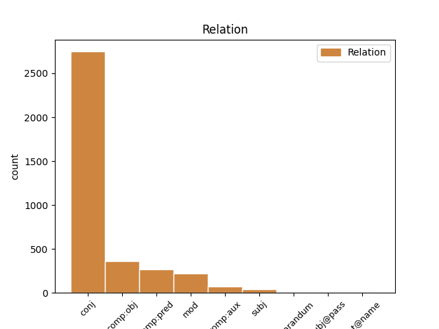
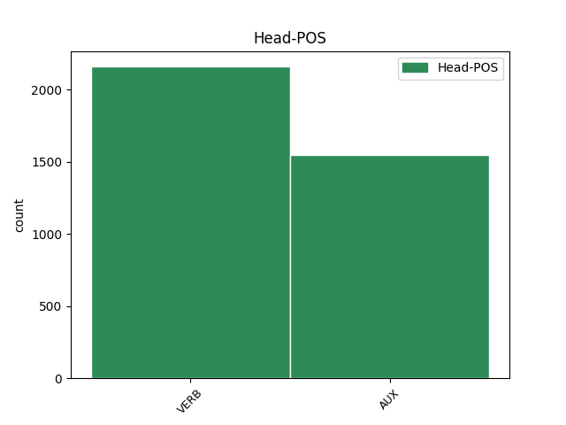
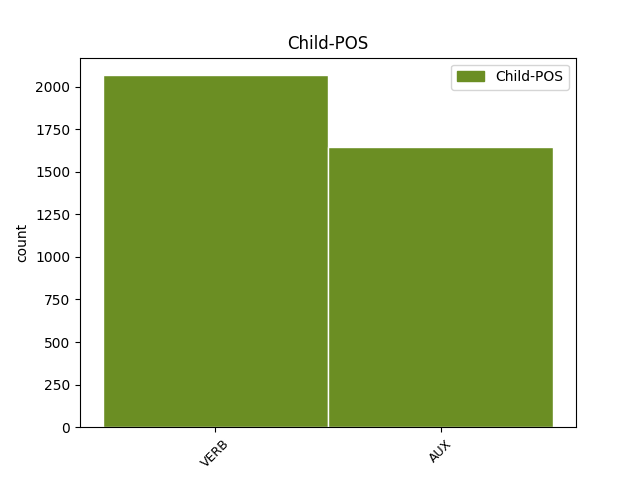

Distribution of features within this leaf



Agreement Rules sorted by frequency.
- When the dependent token is the conjunct(conj) of the head token,
1 - _ _ _ _ 0 _ _ _
2 Me _ _ _ _ 0 _ _ _
3 har ha AUX _ Mood=Ind|Tense=Pres|VerbForm=Fin 0 _ _ _
4 hatt _ _ _ _ 0 _ _ _
5 litt _ _ _ _ 0 _ _ _
6 brotskadar _ _ _ _ 0 _ _ _
7 og _ _ _ _ 0 _ _ _
8 i _ _ _ _ 0 _ _ _
9 skibakken _ _ _ _ 0 _ _ _
10 på _ _ _ _ 0 _ _ _
11 Halbjønnsekken _ _ _ _ 0 _ _ _
12 har ha AUX _ Mood=Ind|Tense=Pres|VerbForm=Fin 3 conj _ _
13 me _ _ _ _ 0 _ _ _
14 hatt _ _ _ _ 0 _ _ _
15 nokre _ _ _ _ 0 _ _ _
16 kuttskadar _ _ _ _ 0 _ _ _
17 etter _ _ _ _ 0 _ _ _
18 fall _ _ _ _ 0 _ _ _
19 på _ _ _ _ 0 _ _ _
20 ski _ _ _ _ 0 _ _ _
21 . _ _ _ _ 0 _ _ _
1 Han _ _ _ _ 0 _ _ _
2 seier seie VERB _ Mood=Ind|Tense=Pres|VerbForm=Fin 0 _ _ _
3 han _ _ _ _ 0 _ _ _
4 ikkje _ _ _ _ 0 _ _ _
5 har ha VERB _ Mood=Ind|Tense=Pres|VerbForm=Fin 2 comp:obj _ _
6 heilt _ _ _ _ 0 _ _ _
7 oversikten _ _ _ _ 0 _ _ _
8 over _ _ _ _ 0 _ _ _
9 kor _ _ _ _ 0 _ _ _
10 mange _ _ _ _ 0 _ _ _
11 påsker _ _ _ _ 0 _ _ _
12 han _ _ _ _ 0 _ _ _
13 har _ _ _ _ 0 _ _ _
14 vore _ _ _ _ 0 _ _ _
15 med _ _ _ _ 0 _ _ _
16 Raude _ _ _ _ 0 _ _ _
17 Kross _ _ _ _ 0 _ _ _
18 på _ _ _ _ 0 _ _ _
19 Skafsåheia _ _ _ _ 0 _ _ _
20 , _ _ _ _ 0 _ _ _
21 men _ _ _ _ 0 _ _ _
22 meiner _ _ _ _ 0 _ _ _
23 det _ _ _ _ 0 _ _ _
24 minst _ _ _ _ 0 _ _ _
25 må _ _ _ _ 0 _ _ _
26 vera _ _ _ _ 0 _ _ _
27 ti _ _ _ _ 0 _ _ _
28 gonger _ _ _ _ 0 _ _ _
29 . _ _ _ _ 0 _ _ _
1 Han _ _ _ _ 0 _ _ _
2 seier _ _ _ _ 0 _ _ _
3 han _ _ _ _ 0 _ _ _
4 ikkje _ _ _ _ 0 _ _ _
5 har _ _ _ _ 0 _ _ _
6 heilt _ _ _ _ 0 _ _ _
7 oversikten _ _ _ _ 0 _ _ _
8 over _ _ _ _ 0 _ _ _
9 kor _ _ _ _ 0 _ _ _
10 mange _ _ _ _ 0 _ _ _
11 påsker _ _ _ _ 0 _ _ _
12 han _ _ _ _ 0 _ _ _
13 har _ _ _ _ 0 _ _ _
14 vore _ _ _ _ 0 _ _ _
15 med _ _ _ _ 0 _ _ _
16 Raude _ _ _ _ 0 _ _ _
17 Kross _ _ _ _ 0 _ _ _
18 på _ _ _ _ 0 _ _ _
19 Skafsåheia _ _ _ _ 0 _ _ _
20 , _ _ _ _ 0 _ _ _
21 men _ _ _ _ 0 _ _ _
22 meiner meine VERB _ Mood=Ind|Tense=Pres|VerbForm=Fin 0 _ _ _
23 det _ _ _ _ 0 _ _ _
24 minst _ _ _ _ 0 _ _ _
25 må måtte AUX _ Mood=Ind|Tense=Pres|VerbForm=Fin 22 comp:pred _ _
26 vera _ _ _ _ 0 _ _ _
27 ti _ _ _ _ 0 _ _ _
28 gonger _ _ _ _ 0 _ _ _
29 . _ _ _ _ 0 _ _ _
1 Og _ _ _ _ 0 _ _ _
2 treng trenge VERB _ Mood=Ind|Tense=Pres|VerbForm=Fin 10 mod _ _
3 nokon _ _ _ _ 0 _ _ _
4 litt _ _ _ _ 0 _ _ _
5 plaster _ _ _ _ 0 _ _ _
6 til _ _ _ _ 0 _ _ _
7 eit _ _ _ _ 0 _ _ _
8 gnagsår _ _ _ _ 0 _ _ _
9 , _ _ _ _ 0 _ _ _
10 hjelper hjelpe VERB _ Mood=Ind|Tense=Pres|VerbForm=Fin 0 _ _ _
11 Raude _ _ _ _ 0 _ _ _
12 Kross-vaktene _ _ _ _ 0 _ _ _
13 til _ _ _ _ 0 _ _ _
14 med _ _ _ _ 0 _ _ _
15 det _ _ _ _ 0 _ _ _
16 òg _ _ _ _ 0 _ _ _
17 . _ _ _ _ 0 _ _ _
1 Planen _ _ _ _ 0 _ _ _
2 denne _ _ _ _ 0 _ _ _
3 dagen _ _ _ _ 0 _ _ _
4 var vere AUX _ Mood=Ind|Tense=Past|VerbForm=Fin 7 comp:aux _ _
5 at _ _ _ _ 0 _ _ _
6 me _ _ _ _ 0 _ _ _
7 skulle skulle AUX _ Mood=Ind|Tense=Past|VerbForm=Fin 0 _ _ _
8 koma _ _ _ _ 0 _ _ _
9 oss _ _ _ _ 0 _ _ _
10 til _ _ _ _ 0 _ _ _
11 Langesund _ _ _ _ 0 _ _ _
12 , _ _ _ _ 0 _ _ _
13 der _ _ _ _ 0 _ _ _
14 ein _ _ _ _ 0 _ _ _
15 aldri _ _ _ _ 0 _ _ _
16 så _ _ _ _ 0 _ _ _
17 liten _ _ _ _ 0 _ _ _
18 avskjedsfest _ _ _ _ 0 _ _ _
19 skulle _ _ _ _ 0 _ _ _
20 finne _ _ _ _ 0 _ _ _
21 stad _ _ _ _ 0 _ _ _
22 , _ _ _ _ 0 _ _ _
23 men _ _ _ _ 0 _ _ _
24 på _ _ _ _ 0 _ _ _
25 grunn _ _ _ _ 0 _ _ _
26 av _ _ _ _ 0 _ _ _
27 redningsaksjonen _ _ _ _ 0 _ _ _
28 måtte _ _ _ _ 0 _ _ _
29 me _ _ _ _ 0 _ _ _
30 ta _ _ _ _ 0 _ _ _
31 oss _ _ _ _ 0 _ _ _
32 inn _ _ _ _ 0 _ _ _
33 til _ _ _ _ 0 _ _ _
34 Tønsberg _ _ _ _ 0 _ _ _
35 i _ _ _ _ 0 _ _ _
36 staden _ _ _ _ 0 _ _ _
37 . _ _ _ _ 0 _ _ _
1 Men _ _ _ _ 0 _ _ _
2 det _ _ _ _ 0 _ _ _
3 er vere AUX _ Mood=Ind|Tense=Pres|VerbForm=Fin 0 _ _ _
4 klart _ _ _ _ 0 _ _ _
5 ein _ _ _ _ 0 _ _ _
6 må måtte AUX _ Mood=Ind|Tense=Pres|VerbForm=Fin 3 subj _ _
7 ta _ _ _ _ 0 _ _ _
8 slike _ _ _ _ 0 _ _ _
9 truslar _ _ _ _ 0 _ _ _
10 på _ _ _ _ 0 _ _ _
11 alvor _ _ _ _ 0 _ _ _
12 . _ _ _ _ 0 _ _ _
1 I _ _ _ _ 0 _ _ _
2 så _ _ _ _ 0 _ _ _
3 fall _ _ _ _ 0 _ _ _
4 blir bli VERB _ Mood=Ind|Tense=Pres|VerbForm=Fin 0 _ _ _
5 575 _ _ _ _ 0 _ _ _
6 årsverk _ _ _ _ 0 _ _ _
7 blir bli VERB _ Mood=Ind|Tense=Pres|VerbForm=Fin 4 reparandum _ _
8 borte _ _ _ _ 0 _ _ _
9 . _ _ _ _ 0 _ _ _
1 Korleis _ _ _ _ 0 _ _ _
2 livet _ _ _ _ 0 _ _ _
3 var vere VERB _ Mood=Ind|Tense=Past|VerbForm=Fin 13 subj@pass _ _
4 den _ _ _ _ 0 _ _ _
5 gongen _ _ _ _ 0 _ _ _
6 når _ _ _ _ 0 _ _ _
7 det _ _ _ _ 0 _ _ _
8 galt _ _ _ _ 0 _ _ _
9 ulike _ _ _ _ 0 _ _ _
10 former _ _ _ _ 0 _ _ _
11 for _ _ _ _ 0 _ _ _
12 handverk _ _ _ _ 0 _ _ _
13 blei bli AUX _ Mood=Ind|Tense=Past|VerbForm=Fin 0 _ _ _
14 vist _ _ _ _ 0 _ _ _
15 . _ _ _ _ 0 _ _ _
1 Bestillingsverket _ _ _ _ 0 _ _ _
2 på _ _ _ _ 0 _ _ _
3 tri _ _ _ _ 0 _ _ _
4 minutt _ _ _ _ 0 _ _ _
5 blei _ _ _ _ 0 _ _ _
6 i _ _ _ _ 0 _ _ _
7 kortaste _ _ _ _ 0 _ _ _
8 laget _ _ _ _ 0 _ _ _
9 , _ _ _ _ 0 _ _ _
10 og _ _ _ _ 0 _ _ _
11 duoen _ _ _ _ 0 _ _ _
12 gav _ _ _ _ 0 _ _ _
13 publikum _ _ _ _ 0 _ _ _
14 ein _ _ _ _ 0 _ _ _
15 ekstra _ _ _ _ 0 _ _ _
16 bonus _ _ _ _ 0 _ _ _
17 med _ _ _ _ 0 _ _ _
18 « _ _ _ _ 0 _ _ _
19 Den _ _ _ _ 0 _ _ _
20 seine _ _ _ _ 0 _ _ _
21 sommarnatt _ _ _ _ 0 _ _ _
22 » _ _ _ _ 0 _ _ _
23 og _ _ _ _ 0 _ _ _
24 « _ _ _ _ 0 _ _ _
25 Vaka vake VERB _ Mood=Ind|Tense=Past|VerbForm=Fin 0 _ _ _
26 og _ _ _ _ 0 _ _ _
27 venta vente VERB _ Mood=Ind|Tense=Past|VerbForm=Fin 25 flat@name _ SpaceAfter=No
28 » _ _ _ _ 0 _ _ _
29 . _ _ _ _ 0 _ _ _
Disagree Examples:
1 Det _ _ _ _ 0 _ _ _
2 eg _ _ _ _ 0 _ _ _
3 særleg _ _ _ _ 0 _ _ _
4 tenkte _ _ _ _ 0 _ _ _
5 på _ _ _ _ 0 _ _ _
6 i _ _ _ _ 0 _ _ _
7 går _ _ _ _ 0 _ _ _
8 , _ _ _ _ 0 _ _ _
9 medan _ _ _ _ 0 _ _ _
10 eg _ _ _ _ 0 _ _ _
11 sat _ _ _ _ 0 _ _ _
12 og _ _ _ _ 0 _ _ _
13 tygde _ _ _ _ 0 _ _ _
14 på _ _ _ _ 0 _ _ _
15 teksten _ _ _ _ 0 _ _ _
16 under _ _ _ _ 0 _ _ _
17 talen _ _ _ _ 0 _ _ _
18 , _ _ _ _ 0 _ _ _
19 var vere AUX _ Mood=Ind|Tense=Past|VerbForm=Fin 0 _ _ _
20 korleis _ _ _ _ 0 _ _ _
21 Paulus _ _ _ _ 0 _ _ _
22 , _ _ _ _ 0 _ _ _
23 hm _ _ _ _ 0 _ _ _
24 , _ _ _ _ 0 _ _ _
25 også _ _ _ _ 0 _ _ _
26 her _ _ _ _ 0 _ _ _
27 ser sjå VERB _ Mood=Ind|Tense=Pres|VerbForm=Fin 19 comp:pred _ _
28 ut _ _ _ _ 0 _ _ _
29 til _ _ _ _ 0 _ _ _
30 å _ _ _ _ 0 _ _ _
31 vere _ _ _ _ 0 _ _ _
32 aktivt _ _ _ _ 0 _ _ _
33 kontekstuell _ _ _ _ 0 _ _ _
34 . _ _ _ _ 0 _ _ _
1 Vel _ _ _ _ 0 _ _ _
2 , _ _ _ _ 0 _ _ _
3 ja _ _ _ _ 0 _ _ _
4 - _ _ _ _ 0 _ _ _
5 det _ _ _ _ 0 _ _ _
6 eg _ _ _ _ 0 _ _ _
7 sat _ _ _ _ 0 _ _ _
8 og _ _ _ _ 0 _ _ _
9 tenkte tenkje VERB _ Mood=Ind|Tense=Past|VerbForm=Fin 0 _ _ _
10 på _ _ _ _ 0 _ _ _
11 , _ _ _ _ 0 _ _ _
12 og _ _ _ _ 0 _ _ _
13 som _ _ _ _ 0 _ _ _
14 eg _ _ _ _ 0 _ _ _
15 evt. _ _ _ _ 0 _ _ _
16 må måtte AUX _ Mood=Ind|Tense=Pres|VerbForm=Fin 9 conj _ _
17 undersøke _ _ _ _ 0 _ _ _
18 nærare _ _ _ _ 0 _ _ _
19 i _ _ _ _ 0 _ _ _
20 Barths _ _ _ _ 0 _ _ _
21 framifrå _ _ _ _ 0 _ _ _
22 Anchor-kommentar _ _ _ _ 0 _ _ _
23 , _ _ _ _ 0 _ _ _
24 er _ _ _ _ 0 _ _ _
25 korleis _ _ _ _ 0 _ _ _
26 Paulus _ _ _ _ 0 _ _ _
27 aktivt _ _ _ _ 0 _ _ _
28 brukar _ _ _ _ 0 _ _ _
29 ord _ _ _ _ 0 _ _ _
30 her _ _ _ _ 0 _ _ _
31 , _ _ _ _ 0 _ _ _
32 som _ _ _ _ 0 _ _ _
33 han _ _ _ _ 0 _ _ _
34 ikkje _ _ _ _ 0 _ _ _
35 gjer _ _ _ _ 0 _ _ _
36 andre _ _ _ _ 0 _ _ _
37 stader _ _ _ _ 0 _ _ _
38 i _ _ _ _ 0 _ _ _
39 sitt _ _ _ _ 0 _ _ _
40 korpus _ _ _ _ 0 _ _ _
41 . _ _ _ _ 0 _ _ _
1 For _ _ _ _ 0 _ _ _
2 Paulus _ _ _ _ 0 _ _ _
3 glir gli VERB _ Mood=Ind|Tense=Pres|VerbForm=Fin 0 _ _ _
4 desse _ _ _ _ 0 _ _ _
5 til _ _ _ _ 0 _ _ _
6 dels _ _ _ _ 0 _ _ _
7 over _ _ _ _ 0 _ _ _
8 i _ _ _ _ 0 _ _ _
9 kvarandre _ _ _ _ 0 _ _ _
10 , _ _ _ _ 0 _ _ _
11 og _ _ _ _ 0 _ _ _
12 slik _ _ _ _ 0 _ _ _
13 var vere AUX _ Mood=Ind|Tense=Past|VerbForm=Fin 3 conj _ _
14 det _ _ _ _ 0 _ _ _
15 for _ _ _ _ 0 _ _ _
16 dei _ _ _ _ 0 _ _ _
17 fleste _ _ _ _ 0 _ _ _
18 i _ _ _ _ 0 _ _ _
19 oldkyrkja _ _ _ _ 0 _ _ _
20 ( _ _ _ _ 0 _ _ _
21 ! _ _ _ _ 0 _ _ _
22 ) _ _ _ _ 0 _ _ _
23 , _ _ _ _ 0 _ _ _
24 sjølv _ _ _ _ 0 _ _ _
25 om _ _ _ _ 0 _ _ _
26 det _ _ _ _ 0 _ _ _
27 her _ _ _ _ 0 _ _ _
28 finst _ _ _ _ 0 _ _ _
29 mange _ _ _ _ 0 _ _ _
30 ulike _ _ _ _ 0 _ _ _
31 variasjonar _ _ _ _ 0 _ _ _
32 mellom _ _ _ _ 0 _ _ _
33 - _ _ _ _ 0 _ _ _
34 sei _ _ _ _ 0 _ _ _
35 - _ _ _ _ 0 _ _ _
36 ein _ _ _ _ 0 _ _ _
37 Tertullian _ _ _ _ 0 _ _ _
38 og _ _ _ _ 0 _ _ _
39 ein _ _ _ _ 0 _ _ _
40 Klemens _ _ _ _ 0 _ _ _
41 av _ _ _ _ 0 _ _ _
42 Alexandria _ _ _ _ 0 _ _ _
43 . _ _ _ _ 0 _ _ _
1 Poenget _ _ _ _ 0 _ _ _
2 er vere AUX _ Mood=Ind|Tense=Pres|VerbForm=Fin 0 _ _ _
3 uansett _ _ _ _ 0 _ _ _
4 at _ _ _ _ 0 _ _ _
5 ein _ _ _ _ 0 _ _ _
6 ikkje _ _ _ _ 0 _ _ _
7 skjelna skjelne VERB _ Mood=Ind|Tense=Past|VerbForm=Fin 2 comp:pred _ _
8 så _ _ _ _ 0 _ _ _
9 tydeleg _ _ _ _ 0 _ _ _
10 mellom _ _ _ _ 0 _ _ _
11 teologi _ _ _ _ 0 _ _ _
12 og _ _ _ _ 0 _ _ _
13 filosofi _ _ _ _ 0 _ _ _
14 , _ _ _ _ 0 _ _ _
15 det _ _ _ _ 0 _ _ _
16 fanst _ _ _ _ 0 _ _ _
17 berre _ _ _ _ 0 _ _ _
18 éin _ _ _ _ 0 _ _ _
19 udelt _ _ _ _ 0 _ _ _
20 visdom _ _ _ _ 0 _ _ _
21 , _ _ _ _ 0 _ _ _
22 så _ _ _ _ 0 _ _ _
23 å _ _ _ _ 0 _ _ _
24 seie _ _ _ _ 0 _ _ _
25 . _ _ _ _ 0 _ _ _
1 For _ _ _ _ 0 _ _ _
2 øvrig _ _ _ _ 0 _ _ _
3 understrekar understreke VERB _ Mood=Ind|Tense=Pres|VerbForm=Fin 0 _ _ _
4 dei _ _ _ _ 0 _ _ _
5 perspektiva _ _ _ _ 0 _ _ _
6 eg _ _ _ _ 0 _ _ _
7 har _ _ _ _ 0 _ _ _
8 gjeve _ _ _ _ 0 _ _ _
9 ovanfor _ _ _ _ 0 _ _ _
10 , _ _ _ _ 0 _ _ _
11 også _ _ _ _ 0 _ _ _
12 kor _ _ _ _ 0 _ _ _
13 fleksibel _ _ _ _ 0 _ _ _
14 og _ _ _ _ 0 _ _ _
15 nytenkande _ _ _ _ 0 _ _ _
16 ( _ _ _ _ 0 _ _ _
17 og _ _ _ _ 0 _ _ _
18 ikkje _ _ _ _ 0 _ _ _
19 minst _ _ _ _ 0 _ _ _
20 djupttenkande _ _ _ _ 0 _ _ _
21 ) _ _ _ _ 0 _ _ _
22 Paulus _ _ _ _ 0 _ _ _
23 var vere AUX _ Mood=Ind|Tense=Past|VerbForm=Fin 3 comp:pred _ SpaceAfter=No
24 . _ _ _ _ 0 _ _ _